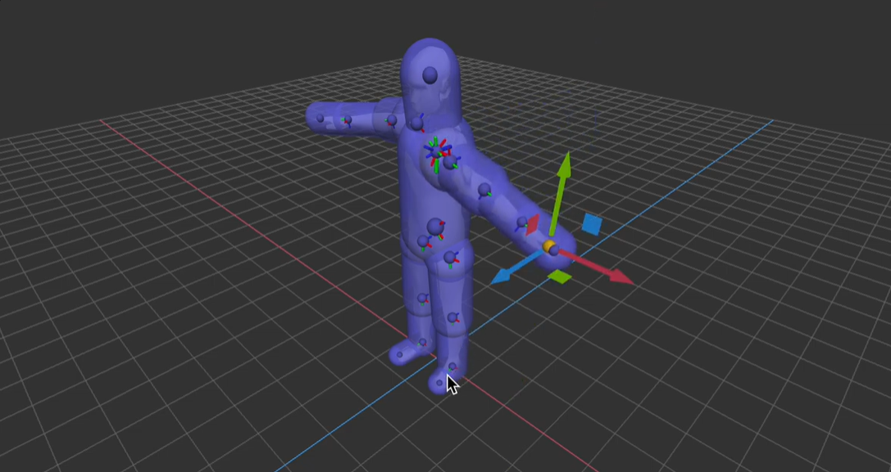
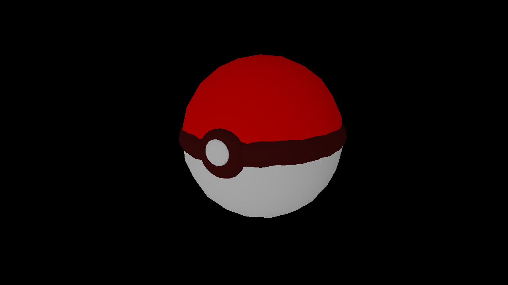
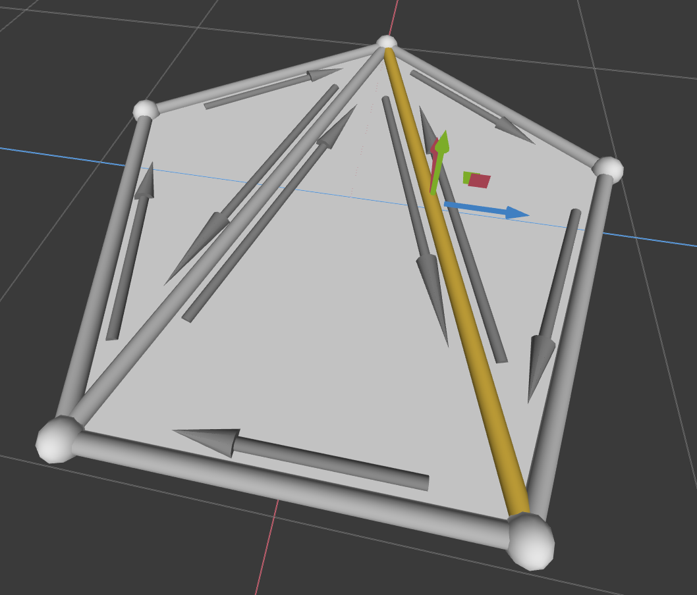
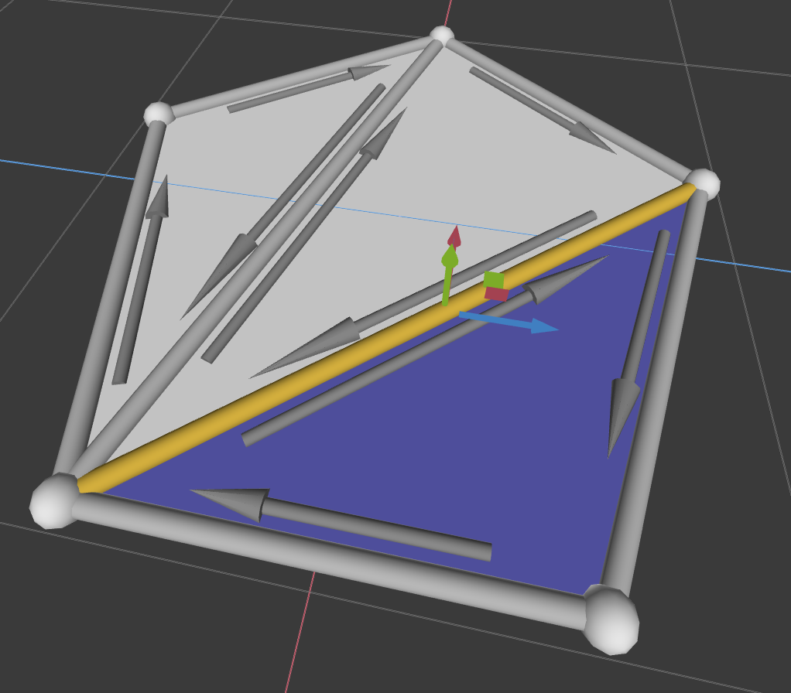
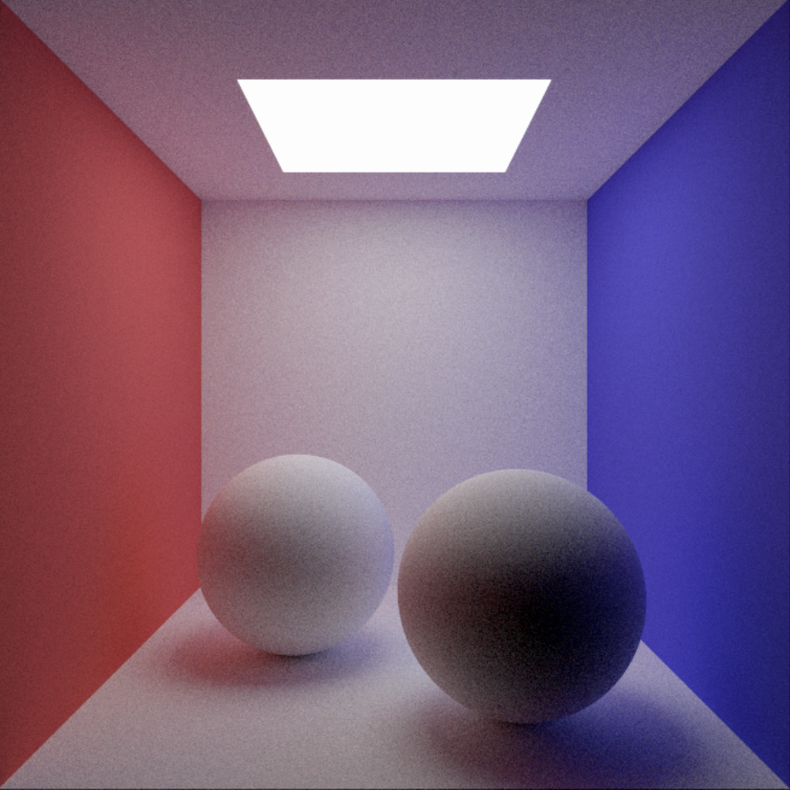
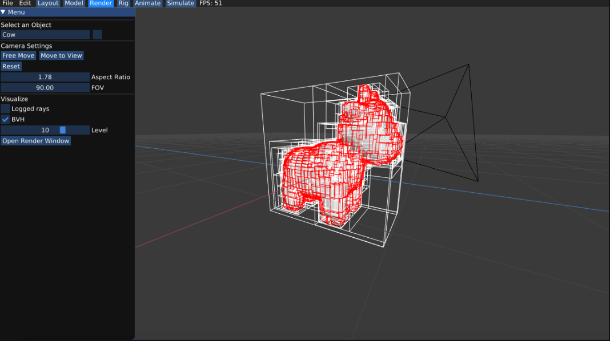

For my Computer Graphics course at Carnegie Mellon, I worked inside Scotty 3D, a C++ graphics engine built for teaching rendering, mesh editing, ray and path tracing, and animation. The engine provides the surrounding scaffolding, and students implement the core systems underneath it across a semester of assignments.
A software rasterizer built around the same stages a GPU uses: transforming vertices through a scene graph, building and clipping triangles, dividing to screen space, and shading the resulting fragments. Covers perspective correct interpolation, depth testing, blending, and supersampling for antialiasing.

Local and global mesh operations built on a halfedge connectivity structure, including edge flips, splits, collapses, triangulation, and Loop subdivision for smoothly increasing mesh detail while converging toward a limit surface.


A ray tracer extended into a full path tracer for global illumination, covering camera ray generation, triangle and sphere intersection, a Bounding Volume Hierarchy for accelerating scene traversal, Lambertian and specular materials including mirrors and glass, light sampling for reduced noise, and infinite environment lighting.


A full animation pipeline covering Catmull-Rom spline interpolation for keyframed motion, forward and inverse kinematics for posing a skeleton, linear blend skinning to deform a mesh based on the skeleton beneath it.